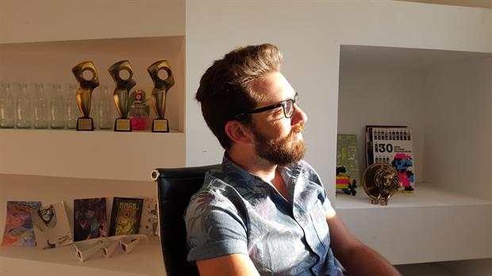

Fue director de efectos visuales de Metegol, creó una empresa y triunfa en el mundo
Paolo Cavalieri fundó Bleed VFX, dedicada a la creación de efectos especiales y que ya cuenta
con oficinas en Buenos Aires, Barcelona y San Pablo
La historia de este joven de 32 años oriundo de Cañada de Gómez, Santa Fe y la empresa que lo
posicionó como una figura de peso en el mercado de la posproducción digital a nivel mundial
empezó apenas una década atrás, cuando daba sus primeros pasos en la industria y diseñaba
una cátedra propia en la escuela de producción Image Campus.

"Trabajaba como empleado en una casa de posproducción y al mismo tiempo daba clases",
cuenta Cavalieri a LA NACIÓN. "Uno de mis alumnos conocía a mi actual socio y me dijo
'juntémonos, podemos hacer algo propio entre los tres'. Tuvimos una reunión inicial y empezamos
a darle forma, hasta que un día los tres abandonamos nuestros trabajos y nos lanzamos a hacer
este emprendimiento."